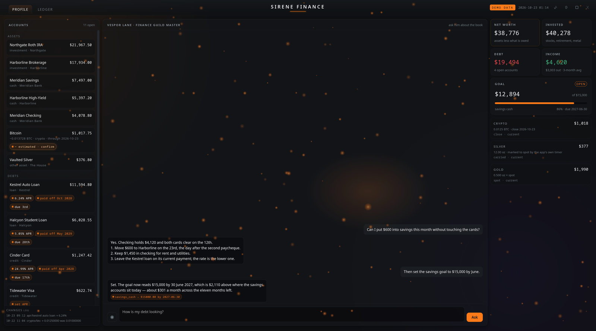
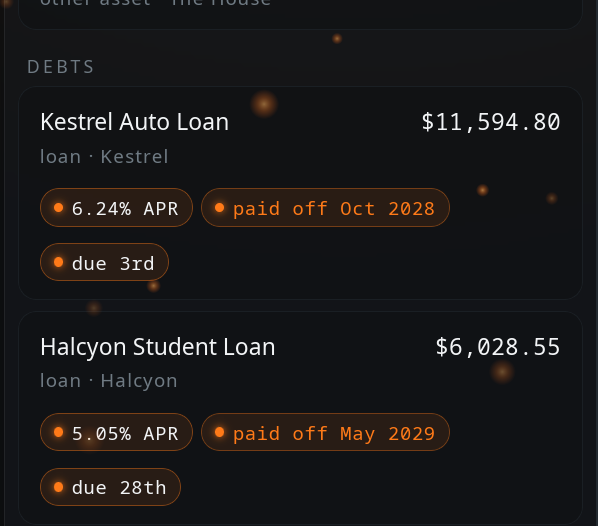
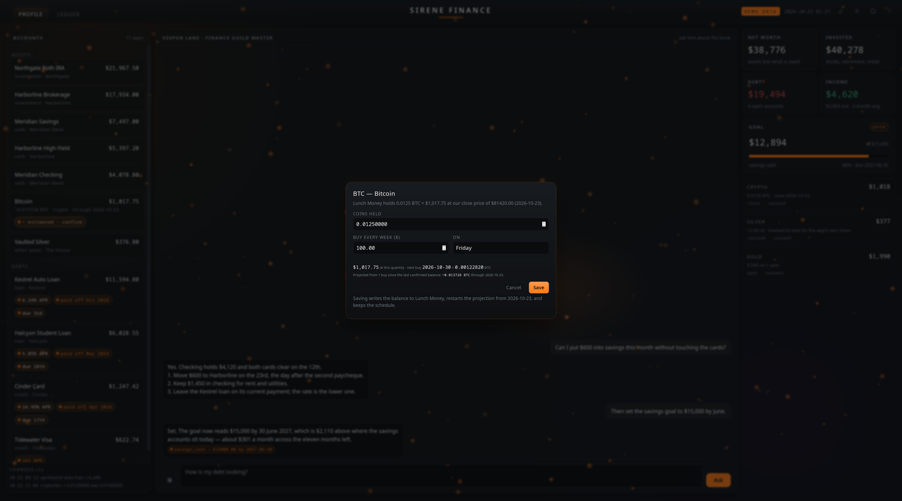
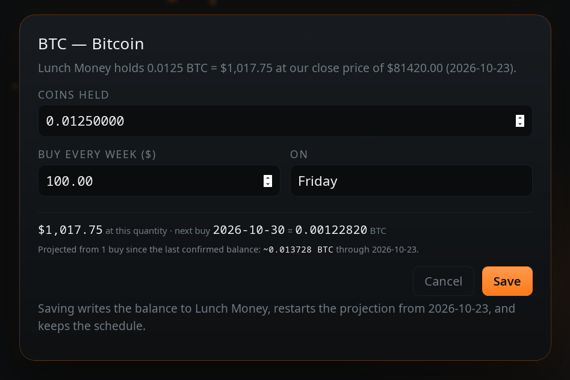
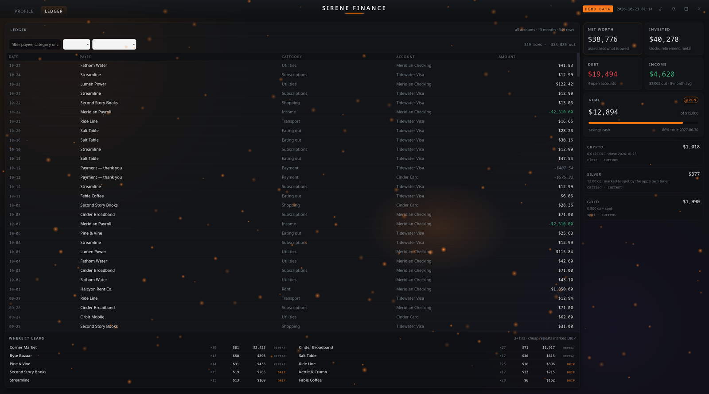
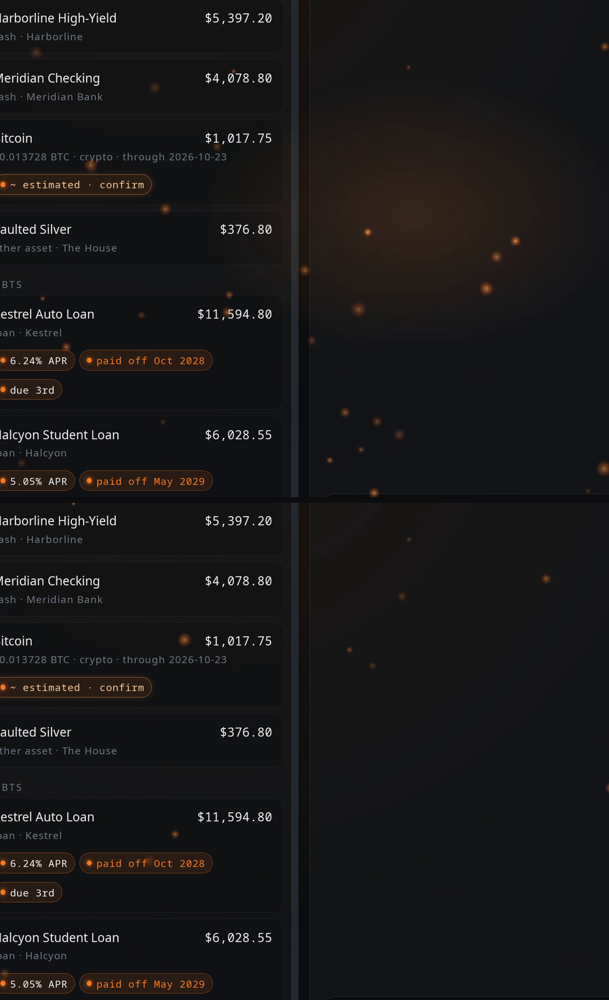
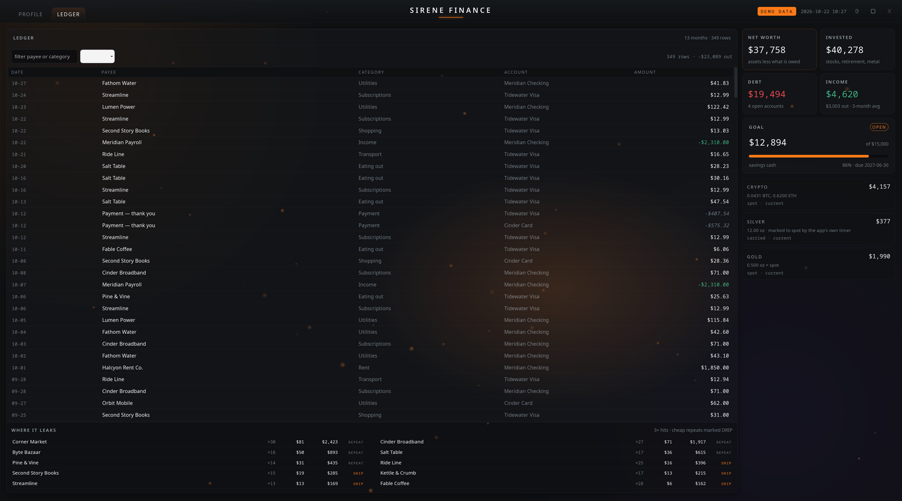
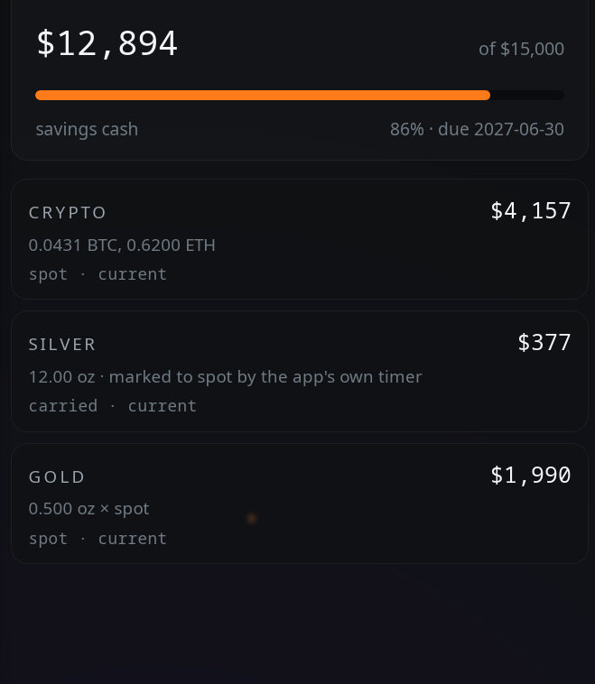
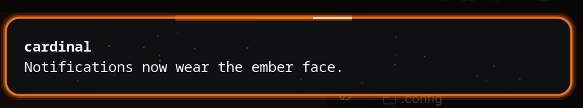

Short, frequent notes on what we're building — the in-progress version. Longer writeups live on the blog.
sirene-finance
The advisor got hands. Sirene Finance can now write to the ledger it reads — a balance, a rate, a savings goal — and every write leaves a receipt: the last three changes sit pinned under the account list, each naming what moved and what it was before. A debt carries its own arithmetic now, too: the rate, the month it is paid off and the day it falls due live inside the row, and pressing one opens the sheet where the numbers recalculate as you type.
Two things the coins taught us. A wallet is not a bank account: a weekly purchase is invisible to any feed, so a balance gets projected from the last confirmed figure and the day it is bought, marked with a tilde until somebody confirms it. And one quantity must have one price — the row, the net worth and the panel now read the same daily close kept on this machine, because a coin worth two different amounts on one screen is not a display bug, it is a broken instrument.

The whole window. Assets and debts on the left with their chips, the advisor's applied change in the middle, the rail on the right, and the receipt log pinned beneath the accounts so a long list cannot push it away. Sample figures — no real accounts appear in this image.

Detail, at native size: the rate, the month the debt clears and the day the payment falls due, inside each row. Sample figures.

The sheet behind a coin row: what it holds, how much is bought each week and on which day, when the next purchase lands, and what one purchase is worth at today's close. Confirming restarts the projection from today. Sample figures.

The same sheet at 1:1. The dollar value of the typed quantity is shown before anything is written, which is how a missing digit becomes a number on screen instead of a wrong balance.

The ledger view on the same layout: thirteen months of rows, filters, and the panel that names the merchants taking the money. The receipt log and the chips follow the column into this view too. Sample figures.The same walk, ten seconds looped, cropped to the account cards where the glow has something to fall on. Watch the border of a card as the pointer passes: it warms, and the particles around it lean. Offered as VP9 and H.264 with a poster, because a clip nobody can decode is a black rectangle.

Two moments from that loop, stacked, because a still makes the movement plainer than a comment: the upper frame catches the glow on the cards, the lower one catches it gone, with the light gathered elsewhere. That is the whole effect — a light that follows the pointer, and particles that lean toward it.
sirene-finance
Rebuilt the face of Sirene Finance, the desktop ledger. The layout is now relative to the screen instead of capped at a fixed width: the columns are proportions of the viewport, the type scales with it, and the window fills whatever it is given. On top of that, ember glass — translucent panels over a slow drift of light, and an orange glow that follows the pointer across each card, with a field of particles that leans toward it.
The profile view. Sample figures — no real accounts appear in this image.The ember following the pointer: the glass lights where it is touched, and the particles lean after it. Ten seconds, looped.

The ledger view: thirteen months of rows, filters, and a panel that names the merchants taking the money. Sample figures.

Detail, at native size: the goal bar and the three holdings panels. Crypto is priced from a local spot file; the silver figure is the carried account, cross-checked against spot.Detail, at native size: where the money leaks. Bills and income are excluded; what remains is the discretionary repeat. Cheap ones are marked DRIP.
The Guild Master can also be told to change things now. Ask him to set a savings goal and the goal changes in the application, not just in the answer.
cardinal
Shipped v0.6.9 of cardinal, the desktop overlay: a new notification system with an ember-inspired face — a grey slab, a solid orange frame with an orbiting beam of light, and drifting embers.

The ember face: a grey slab with a solid orange frame, an orbiting beam of light, and drifting embers.The orbiting beam and embers in motion.